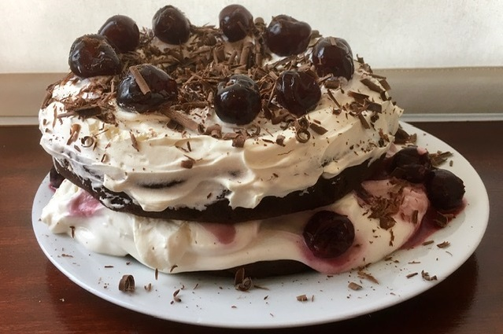

Black Forest Cake
Ingredients:
-
1 and 1/2 Cups of Flour
-
1/2 Cup of Unsweetend Cocoa Powder
-
1 Cup of Sugar
-
1 tsp of Baking Soda
-
1/2 tsp of Salt
-
1 Cup of Milk (Soya, Almond, etc)
-
2 tsp of Vanilla Extract
-
80ml of Vegetable Oil
-
1 tbsp of Vinegar
-
1 Flax Egg
-
1 Pot Lacto-Free Double Cream
-
1 Pot Oatly Creme Freche
-
Food Haven Lacto-Free Whipped Cream
-
Opies Black Cherry Kirsch
-
1 Cup of Frozen Pitted Cherries
-
3 tbsp of Caster Sugar
-
2 tsp of Cornstarch
-
2 tbsp of Icing Sugar
-
Glazed Cherries

Method:
-
Preheat your oven and spray two 7 inch cake pans with non-stick spray and then line the bottoms with
circles of parchment paper.
-
Sift the flour and cocoa powder into a mixing bowl.
-
Add the sugar, baking soda and salt.
-
Prepare your flax egg by mixing one tablespoon of flaxseed meal with 3 tablespoons of hot water and
leave to sit for a minute or so to become gloopy.
-
Add your soy milk (or other non-dairy milk), vanilla extract, oil, vinegar and flax egg to the
mixing bowl.
-
Whisk with a hand whisk until well combined, but be careful not to overmix, just mix until large
lumps are gone, small lumps are fine.
-
Seperate the batter in half and pour half of the batter into one cake pan and the rest into the
second one.
-
Place into the oven to bake for 30 minutes or until a toothpick inserted into the center of one of
the cakes comes out clean.
-
Make sure that the cake is fully cool before decorating it.
-
Take the frozen cherries and put them in a pot on the stove and let them simmer until they are soft
and have released a lot of juices.
-
Add 2 tbsp of kirsch cherries into the pot and some of the juice as well and let them all simmer
together for 4 minutes.
-
Take out all of the cherries from the pot but leave the jiuces inside it.
-
Add the sugar to the juices and let it simmer until it fully dissolves.
-
Then add the cornstarch and also let it simmer for 3-4 minutes.
-
Once it it done, pour it back onto the cherries and let it all cool together fully.
-
Spread 2 tbsp of kirsch juice onto the bootom half of the cake.
-
Whip the creme freche in one bowl.
-
In another bowl whip the double cream and add the icing sugar and whip until soft peaks form.
-
Fold in 2 tbsp of the whipped double cream into creme freche and gently mix it in.
-
Spread the cream from the previous step onto the bottom layer of the cake.
-
Lay out the cooled cherries on top of the cream on the bottom halfo of the cake.
-
Put the second half of the cake on the bottom one, covering the filling.
-
Spread the rest of the cream on the top part of the cake.
-
Decorate the cake with the food haven whipped cream.
-
Then decorate with the glazed cherries as well.
-
For the finishing touch, shred some chocolate onto the cake.
-
Put the cake into the fridge for a couple of hours before serving.